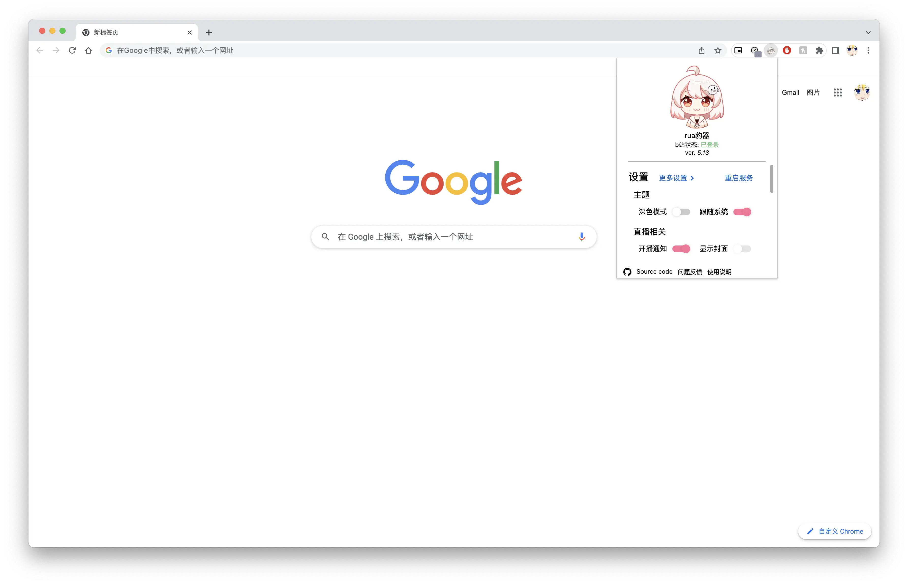
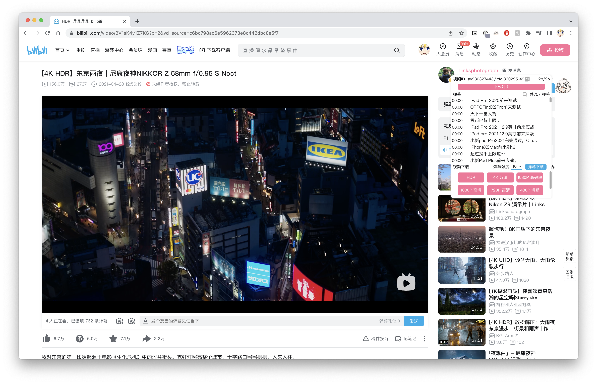
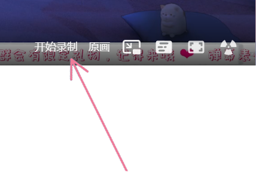

b站助手rua豹器 使用说明
rua豹使人快乐，rua了又rua！
rua豹器5.10来啦
兼容绝大多数chromium内核浏览器，例如：Opera浏览器，360浏览器，新MS Edge，yandex....。
现已支持火狐浏览器，见：火狐扩展商店
ver 5.10 特性：
- 悬浮球现在支持番剧页面了，可以下载番剧了。
- 现在可以缓存8k的视频了。
- 加入了消息推送的功能 (包括@、赞、回复、私信、系统通知)。
- 加入了新动态推送的功能。
- 更改了开播查询API，现在推送延迟更小了。
- 更改了下载方式（但是现在在文件完成下载前请不要关掉页面，不用担心文件是以流的方式直接写入硬盘的不会占用内存），修复了文件名突然变成一串数字的问题。
- 添加了对超大文件的下载支持，但是由于FFmpeg wasm的限制将无法合并视频音频，遇到大容量dash协议媒体流（HDR、8k、4k）时将保留为两个mp4文件（一个视频，一个音轨），flv文件不受影响，参见FFmpeg.wasm文档
- 现已转为MV3应用。
- 一些其他改进。
已有的功能
- 视频投稿推送通知。
- 直播间开播推送通知。
- 直播牌子自动切换。
- 自动签到。
- 弹幕姬表情选取发送框（目前仅支持八儿力老师的直播间）。
- 默认直播画质。
- 大会员B币兑换。
- 隐身进入直播间的功能。
- 右键关联菜单搜索。识别到AV/BV号时会自动跳转到视频页面，其余的会跳转到b站搜索结果。
- 自动打卡有牌子的直播间。
- 主站视频下载，支持HDR、8K，单音轨及杜比全景声下载
注：音轨音质保存默认会选择视频提供的最佳音频。
- 快速录制直播片段 (beta)
支持录制重放，默认保留开始录制前5分钟片段，可在设置中设置重放时长 - 增加了新版UI主页分区隐藏的功能。
- 添加了音乐播放器页面的下载功能。
Manifest V3
自5.10版开始rua豹器已转为Manifest V3扩展应用。关于MV3
MV3带来了一系列的性能以及安全性提升，具体可以参阅Google官方文档(如果你感兴趣的话)。其中最重要的一点：MV2将于2023年1月停止支持，届时现有的MV2也将无法运行。当然也可以不更新浏览器来继续使用MV2扩展应用。
为什么要现在转移为MV3应用
MV3作为自有扩展应用以来最大一次更新，对服务端的更改是巨大的。service worker直接取代了现有的background脚本，也就导致需要完全重写扩展应用服务端。rua豹器的MV3转移计划可以追随到数个版本前。作为个人开发者我没有足够的精力同时维护两个不同版本 TvT... 而且MV2将于明年初被完全废止。
所以当rua豹器准备好时，将会在第一时间转为MV3（也就是现在）。
对用户有什么影响
由于service worker取代了现有的background脚本，而且不像background脚本可常驻后台运行service worker有自己的生存周期。原先的定时器需要改为alarms API，由于alarms API的限制两次运行之间的间隔最小为1分钟。所以原先10s左右就可以收到开播、动态的通知现在需要1分钟左右。相较于原来的10秒，这是一个不小的间隔。但是最小间隔只适用于发行版，也就是在商店或者crx直接安装的。
所以只需以下步骤即可将通知间隔改为原先的10秒钟（具体位置见右图）：
- 将在Gitee、GitHub发行页下载的crx文件后缀改为zip后解压
- 打开位于扩展程序页面右边的开发者模式
- 选择位于扩展程序页面左边的加载已解压的扩展程序，加载刚刚从zip文件解压的源码
怎么用
在b站登录自己的账号后，插件推送类功能就会自动运行。
主页分区隐藏
在新版UI下的分区中只要点击分区旁边的 / 就可以 隐藏 / 显示 分区啦。
自定义设置

单击地址栏右侧插件图标即可打开设置。 目前可以设置的有：
- 开播通知
- 视频更新通知
- 通知模式（是否显示直播间封面，macOS不支持）
- 开关自动签到
- 开关自动切换粉丝勋章
- 自动打卡直播间（有勋章的直播间）
- 默认直播画质
- 大会员B币兑换
- 隐身进入直播间/增强隐身
- 直播录制
直播间内悬浮球
默认会出现在这个位置，你也可以把它拖拽到你喜欢的位置。
视频/番剧页悬浮球

单击地址栏右侧插件图标即可打开设置。 目前支持的功能的有：
- 视频信息
- 弹幕查询
- 弹幕下载（ass格式）
- 弹幕下载强度，与页面内弹幕云屏蔽设置一致，强度越低下载到的弹幕越少
- 视频下载：
- 支持HDR、8k、4k，高于1080p的清晰度需要大会员
- HDR、8k、4k视频会保存为mkv，其他质量的会保存为原视频文件格式
- 支持单音频下载，音频会保存为m4a格式，杜比全景声会保存为mp4格式。
- 当HDR、8k、4k文件大于2GB时将分开视频、音频保存为两个mp4文件。
- 现在文件名不会再突然变成一串数字了。
- 由于现在b站媒体源需要来源认证（视频页发起请求），所以现在视频的取流和缓存过程要在视频页完成。也就是说下载完成前不能关闭视频页（挂着就行），但是不用担心文件是以流的方式直接写入硬盘的不会占用内存。
移动端
下载支持插件的浏览器（如kiwi）并在浏览器安装即可。（暂不支持iOS）
录制直播切片(beta)
rua豹器自5.2.0加入了录制直播切片的功能！支持录制重放，这样就不会错过要录制的片段啦！
目前录制经过验证的最大分辨率为1080p。1440p及以上可以录制但可能会造成性能问题（如丢帧、卡顿）。
由于MediaRecorder视频录制机制，某些视频剪辑软件可能无法直接打开视频(测试软件：Adobe Premiere Pro CC 2017，比较老)。所以在录制完成后会先经过转码，转码完成后将自动下载。
转码采用FFmpeg wasm。在默认设置(见下图)下一段5分钟的视频大致需要6~7分钟完成转码。

- 开始/结束录制：打开切片录制功能后在播放器ui，画质旁边就可以找到开始/结束录制按钮，点击即可进行录制/下载切片。
目前不支持HEVC
目前更改画质，刷新，重连都会使已录制但没有尚未转码的内容丢失。
直播结束时或直播间切断时正在录制的内容也不会被保存。
静音的话也是无法录制的。
所有测试均是在Google Chrome 版本 97.0.4692.99（正式版本） （64 位）上完成的。
版本记录
ver 5.10
- 悬浮球现在支持番剧页面了，可以下载番剧了。
- 现在可以缓存8k的视频了。
- 加入了消息推送的功能 (包括@、赞、回复、私信、系统通知)。
- 加入了新动态推送的功能。
- 更改了开播查询API，现在推送延迟更小了。
- 添加了对超大文件的下载支持，但是由于FFmpeg wasm的限制将无法合并视频音频，遇到大容量dash协议媒体流（HDR、8k、4k）时将保留为两个mp4文件（一个视频，一个音轨），flv文件不受影响，参见FFmpeg.wasm文档
- 更改了下载方式（但是现在在文件完成下载前请不要关掉页面，不用担心文件是以流的方式直接写入硬盘的不会占用内存），修复了文件名突然变成一串数字的问题。
- 现已转为MV3应用。
- 一些其他改进。
ver 5.9
- 现在音频缓存会自动根据视频、音频信息填入元数据（作者，标题，年份，歌词等）。
- 添加了直播间当弹幕发送被吞时的提示。
- 现在养牌子打卡每日刷新由0点改为了8点。
- 修复了音频页面下载按钮显示不正确的问题。
- 修复了强力隐身模式下主站显示未登陆的问题。
- 一些其他改进。
ver 5.8
- 添加了增强隐身的功能。
- 添加了音乐播放器页面的音乐下载，下载质量为当前音乐提供的最佳音质，格式为flac或m4a。(虽然不知道有什么用)
- 添加了表情权限显示。
- 减少了ass文件弹幕字体的描边宽度，现在看上去更自然了。
- 修复了弹幕框字数上限显示不正确的问题。
- 修复了某些情况下主页分区隐藏不生效的问题。
- 修复了插件导致的主页"动态"图标显示不正常的问题。
- 一些其他改进。
ver 5.7
- 增加了对"房间专属表情"的支持。
- 增加了新版UI主页分区隐藏的功能。
- 一些其他改进。
ver 5.6
- 现在可以缓存HDR视频了。
- 一些其他改进。
ver 5.5
- 现在缓存音频会自动保存为m4a文件，不需要再手动修改文件名了。
- 添加了杜比全景声音频下载的功能。（由于封装问题杜比全景声音频会保存为mp4格式）
ver 5.4
- 添加了视频弹幕下载的功能。
- 禁用了macOS下的推送"显示封面"开关，因为macOS不支持此类推送。
- 修复了macOS中文输入法回车键在直播间悬浮输入框中意外触发弹幕发送的问题。
- 一些其他改进。
ver 5.3
- 提高了录制直播片段的导出效率。
- 添加了通用表情及UP大表情的悬浮窗以及全屏下的支持。(支持所有直播间)
- 修复了一些问题。
ver 5.2
- 添加了快速录制直播片段。并提高了导出效率。
- 现在主播下播后还在通知栏中的开播通知会自动清除。
- 修复了一些问题。
ver 5.1
- 添加了音频的wav转码功能。
- 添加了弹幕内容查询功能。
- 修复了一些问题。
ver 5.0
- 添加了视频页面的视频/音轨下载功能。
- 添加了视频页面的弹幕查询功能。
- 优化了直播间深色模式的支持。
- 更新了勋章查询的API，修复了勋章佩戴失效的问题。
- 修复了一些问题。
ver 4.14.3
- 将Haruna对高分辨率屏幕做了支持。
- 添加了检测更新版本功能。
- 优化了推送的图像及稳定性。
- 修复了一些问题。
ver 4.14.2
- 修复了一些问题。
ver 4.14
- 添加了隐身进入直播间的功能。
- 添加了右键关联菜单搜索。
- 添加了自动打卡有牌子的直播间。
ver 4.13
- 修复了一系列问题。
- 移除了直播间无侧边栏网页全屏的选项。(因为我是猪陛...)
ver 4.12
- 添加了视频更新的推送通知。
- 添加了直播间无侧边栏网页全屏的选项。
- 修复了关闭浏览器再启动后无法立即签到的问题。
- 更改了天选之人抽奖的逻辑。现在点击参与后天选窗口会自动关闭，开奖时若没有中奖则不再会弹窗。注：此功能不会影响正常参与天选。
- 修复了一些微小的问题。
ver 4.11
- 添加了默认画质的设置。
- 添加了大会员B币兑换。
- 修复了一些微小的问题。
ver 4.10
- 添加了直播间悬窗的初始位置和位置记忆功能。
- 修复了在某些直播间换牌子失效的问题。
- 修复了某些情况下自动签到失效的问题。
- 添加了对深色模式的支持
ver 4.9
- 添加了使用说明页面。
- 修复了点击通知时可能会打开多个窗口的问题。
- 改进了通过通知打开直播间时的窗口逻辑。
- 修复了初次进入直播间时牌子显示不正确的问题。
ver 4.8
- 添加了图片模式通知。
- 修复了一些问题。
- 添加了对移动端的支持。（需要移动端浏览器支持插件）
ver 4.7
- 改进了翻牌子的功能，现在支持多个直播间无缝切换，不再需要刷新了。
- 添加了设置页面。
- 修复了移动悬窗时文本会被选中的问题。
ver 4.6
- 添加了自动签到功能。
- 改进了直播间信息API调用，开播推送延迟大幅减少。
开源组件许可
FFmpeg.wasm
- Offical site: ffmpegwasm.netlify.app
- Copyright (c) FFmpeg.wasm developers and contributors
- License: github.com/ffmpegwasm/ffmpeg.wasm-core/blob/n4.3.1-wasm/LICENSE.md
Protocol Buffers
- Offical site: developers.google.com/protocol-buffers
- Copyright (c) 2008 Google Inc.
- License: github.com/protocolbuffers/protobuf/blob/master/LICENSE
CRC crack
- CRC.js github.com/bilibili-helper/bilibili-helper-o/blob/master/src/js/libs/crc32.js
- Copyright (c) 2020 Zac Yu, ruo
- License: github.com/bilibili-helper/bilibili-helper-o/blob/master/LICENSE